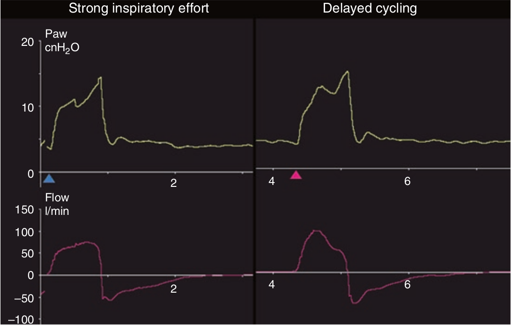

سایکل دیررسی و توقف تلاش نیرومند دمی بیمار هر دو بصورت افزایش فشار در در انتهای دم تظاهر میکند. از روی الگوی شدت جریان دمی می توان این دو را از هم افتراق نمود. توقف تلاش نیرومند دمی بصورت الگوی شدت جریان گرد نمایش می یابد. در سایکل دیررس، شدت جریان دمی شکل مثلثی نرمال خود را دارا می باشد. در صورتی که علت سایکل تاخیری نشت تصادفی باشدیک شدت جریان باثبات در انتهای هواگیری ریه ها خواهیم داشت.

با کدام یک می توان سایکل دیررس را از توقف تلاش نیرومند دمی افتراق داد؟
۱ - مشاهده منحنی فشار هنگام هواگیری ریه ها
۲ - مشاهده منحنی فشار هنگام بازدمی
۳ - از روی شکل منحنی شدت جریان دمی
۴ - از روی شکل منحنی شدت جریان بازدمی
۵ - با تغییر حساسیت ترایگر دمی